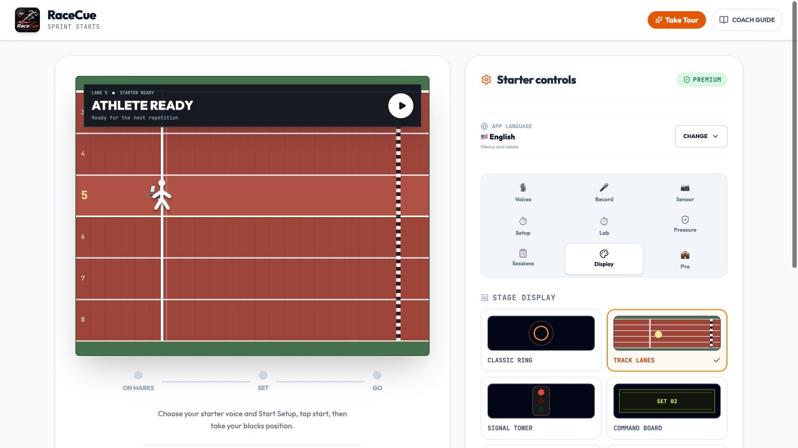
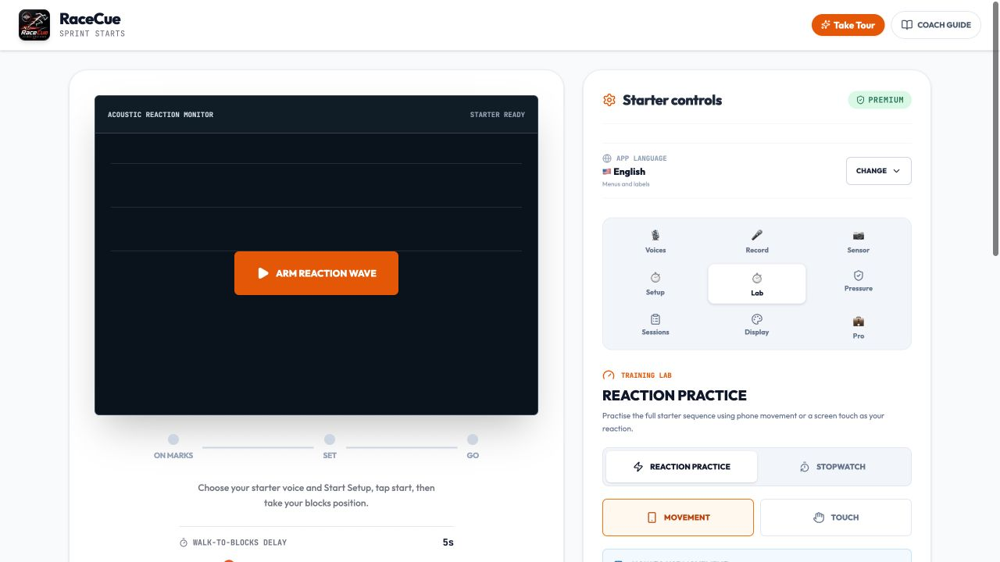
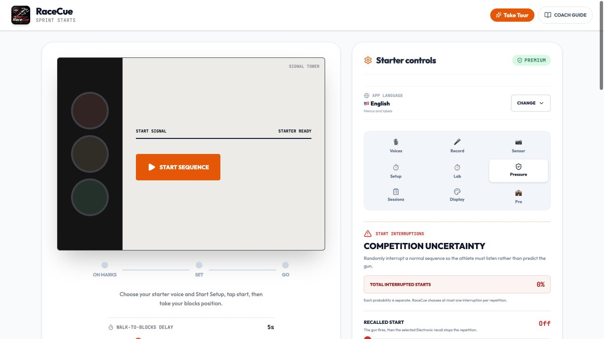

01 / STARTER
Realistic start sequences
Adjust On Your Marks pacing, the Set hold and timing variation. Choose recorded starter personas, custom commands, nine pistol or clap signals, and electronic or double-pistol recalls.
Sprint-start training for athletes and coaches
Practise sharper reactions and more controlled first steps with realistic starter commands, camera tools, competition pressure, start video, timing, and structured sessions.
Preparing for iPhone and Android beta testing
The complete start line
RaceCue is built for sprinters training on their own, athletes working with a coach, and groups running repeatable starts. The main dial keeps the sequence simple while deeper controls stay close when they are needed.

Everything in one training app
Use only the starter, or build a complete practice around reaction, recording, pressure, repetitions, and coach feedback.
01 / STARTER
Adjust On Your Marks pacing, the Set hold and timing variation. Choose recorded starter personas, custom commands, nine pistol or clap signals, and electronic or double-pistol recalls.
02 / REACTION
Run movement or touch drills, estimate the response after GO, flag early movement, compare recent attempts, or use the main sequence while the stopwatch continues through the sprint.
03 / CAMERA
Mount the phone side-on, use the front or rear camera, and optionally start hands-free when the athlete settles. Camera reaction timing can also estimate first movement after GO.
04 / VIDEO
Prepare either camera once and record each start from before the commands until shortly after GO. Preview the latest repetition and save only the useful videos.
05 / PRESSURE
Add real track ambience and random distractions while official commands remain dominant. Practise recalled starts, random stand-up commands, gun misfires, and changing Set holds.
06 / SESSIONS
Run structured repetitions with recovery countdowns, create coach sessions with athlete and lane assignments, add notes and manual times, then review or export local results.


Sound, light, and display
Recorded starter voices
Starter audio and the app interface can be selected independently. Use English commands with Arabic menus, or Turkish commands with an English interface. Arabic includes a right-to-left layout.
Use it your way
Place the phone near the blocks, connect a speaker if useful, and use sound, light, motion, touch, camera, or video to rehearse starts independently.
Choose the number of starts and recovery time. RaceCue stays in focus mode, counts down the next repetition, and records completed, interrupted, and false-start attempts.
Add athlete names and lane assignments, run starts, stop the timer at the line, enter an externally measured time, attach notes, and export the session.
Simple launch model
RaceCue is being prepared as a free core app with a single lifetime Premium purchase. No recurring subscription and no advertising are planned for launch.
Pricing and availability remain subject to final App Store and Google Play configuration.
Private by design
RaceCue does not require an account and currently uses no advertising or analytics SDK. Camera processing, start-video previews, voice and ambience recordings, motion readings, settings, and training history are handled locally.
RaceCue 1.0
Training feedback, not certified Fully Automatic Timing. iPhone and Android beta preparation is in progress.